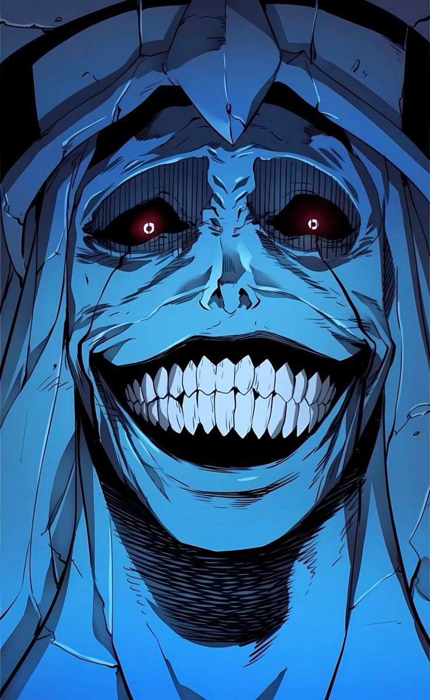
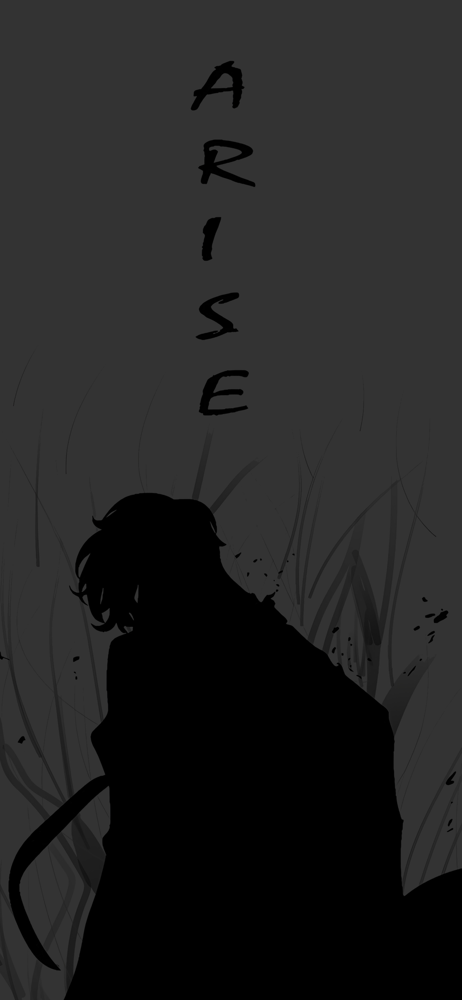
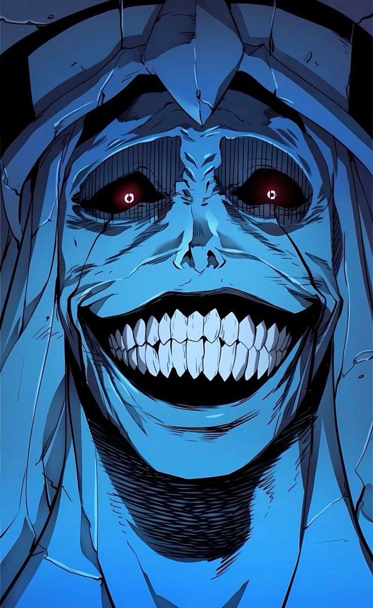
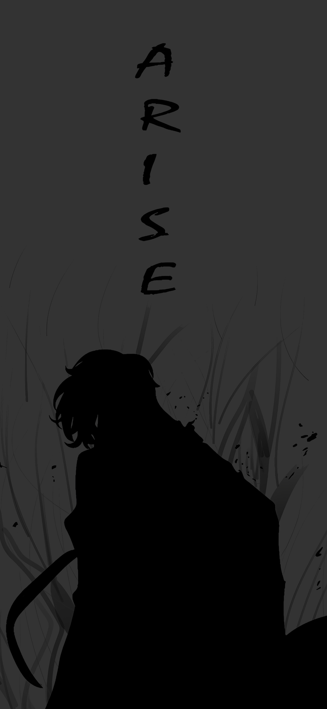
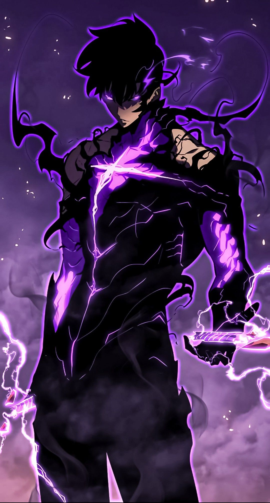
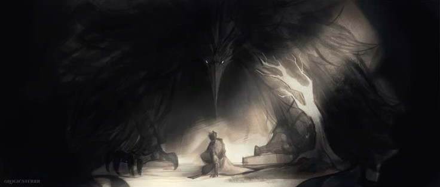
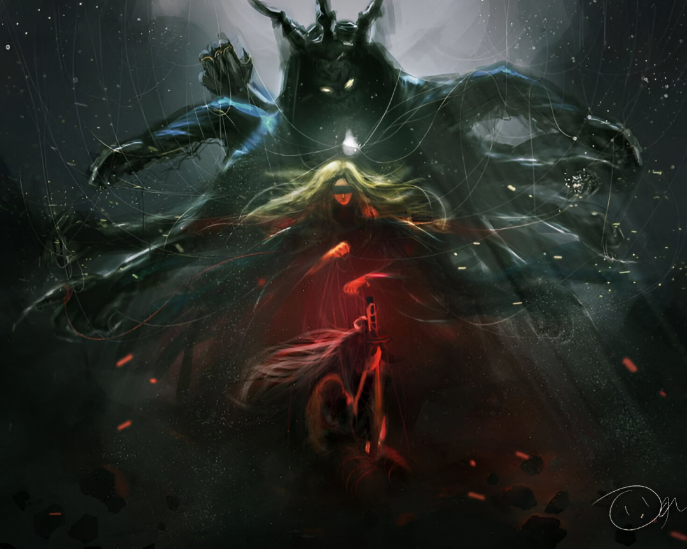
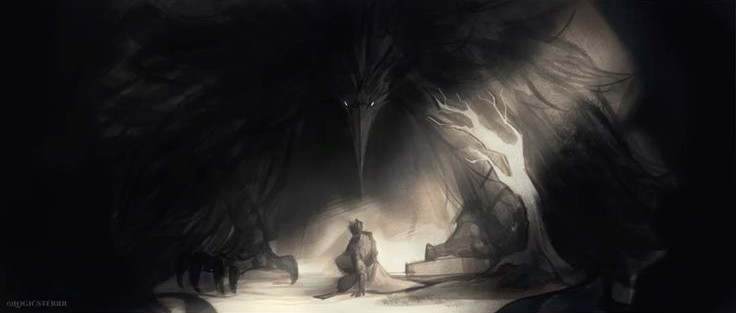
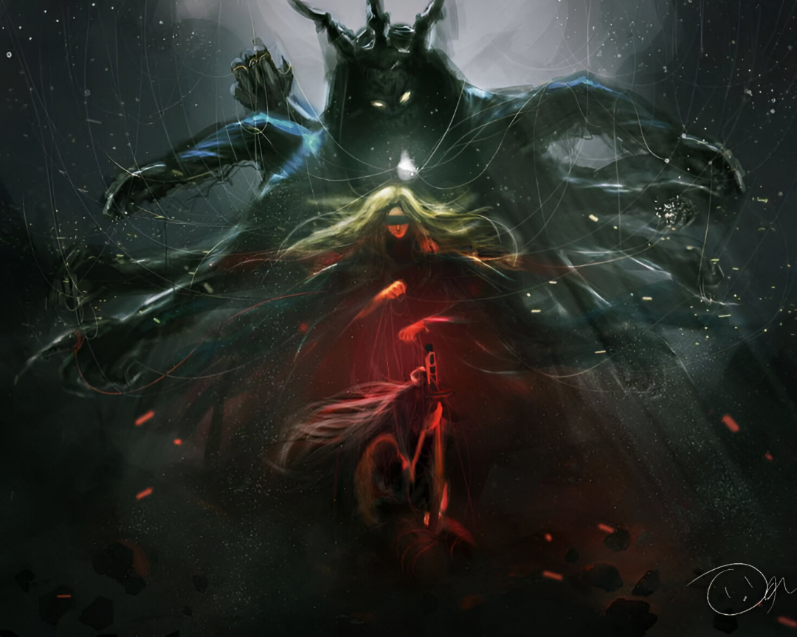

Solo Leveling
La historia se sitúa en un mundo donde, de forma repentina, aparecen portales que conectan la Tierra con mazmorras llenas de monstruos. Para enfrentarlos, surgen personas con habilidades especiales llamadas cazadores, clasificados por rangos según su poder. El protagonista es Sung Jin-Woo, conocido como el cazador más débil de todos (rango E), apenas capaz de sobrevivir en misiones básicas. Durante una incursión a una mazmorra doble, Jin-Woo vive una experiencia cercana a la muerte y recibe una habilidad única: un sistema similar al de un videojuego que le permite subir de nivel, algo imposible para cualquier otro cazador.
 






 


